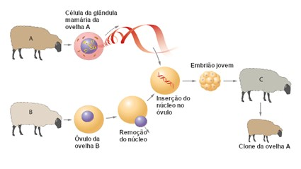

A cada dia, nosso mundo se torna mais avançado tecnologicamente, e consequentemente chega mais próximo a ideias que antes eram apenas fictícias, porém agora podem fazer parte de nossa realidade. A clonagem é uma dessas ideias.
A palavra clone, originária da palavra grega klon, é utilizada para se referir a indivíduos geneticamente idênticos, ou seja, um organismo que se origina de uma célula e é idêntico a mesma.
A ideia de clonagem foi apresentada em 1938, pelo embriologista Hans Spemann, o qual propôs uma experiencia em que o núcleo de uma célula, em um estado mais avançado de desenvolvimento, seria transferido para um óvulo.
A partir disso, surgiram vários experimentos, porém não deram certo. No entanto, em 1997, um experimento foi bem-sucedido, onde uma ovelha chamada Dolly foi originada de uma célula mamária, e não embrionária como os outros experimentos.
Portanto, esta tecnologia está se tornando cada vez mais próxima a nós, com isso, várias dúvidas podem surgir, como: Como utilizaremos a clonagem, ou quando utilizaremos a clonagem. Porém a mais importante pergunta é, será que estamos prontos para tal tecnologia?